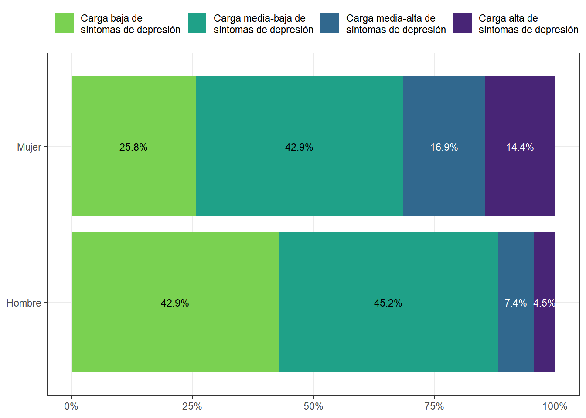
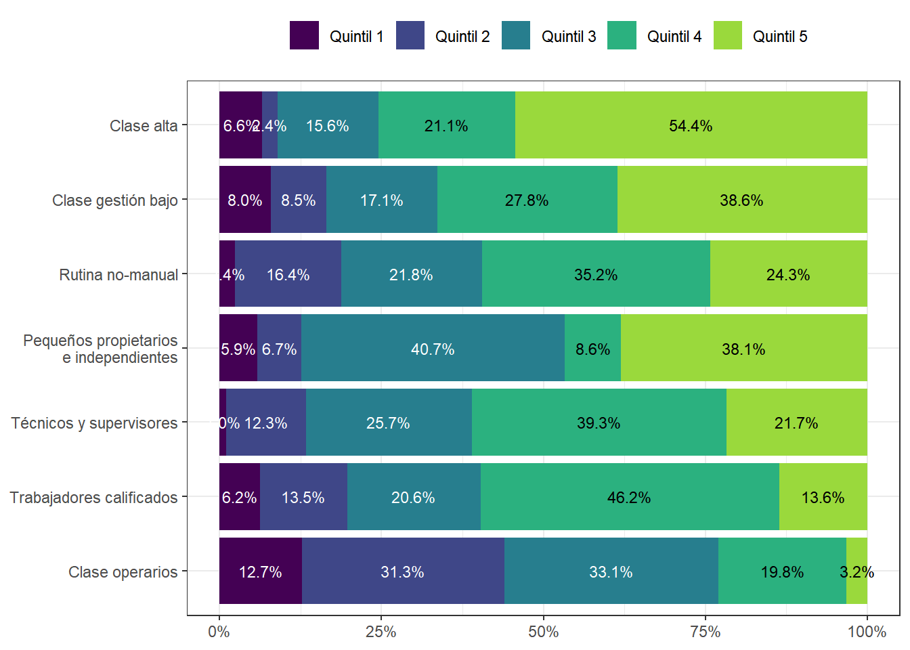
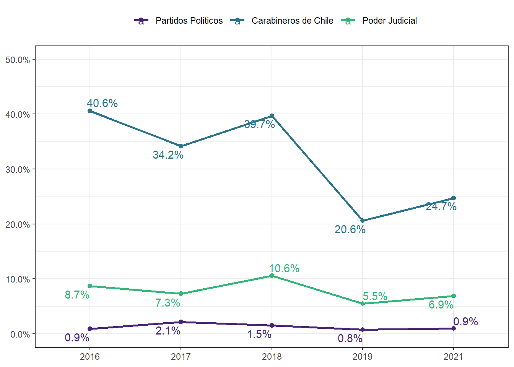

Capítulo 5 Movimientos Sociales y Acciones Colectivas
5.1 Ciclo de movilización política y estallido social
5.1.4 1.4 Descriptivos generales
elsoc_long_2016_2021 %>%
filter(tipo_atricion == 1 & !c20 %in% c(-888, -999)) %>%
mutate(movsoc = car::recode(c20, "1:5 = 1; 8:10 = 1; 6:7 = 2; 11:12 = 3"),
movsoc = factor(movsoc, levels = c(3, 2, 1),
labels = c('Ninguno', 'Conservador', 'Progresista'))) %>%
dplyr::filter(!is.na(movsoc)) %>%
prop(movsoc, by = c(ola), na.rm = TRUE) %>%
sjlabelled::as_label(ola) %>%
ggplot(aes(y = prop, x = movsoc, fill = ola,
label = scales::percent(prop, accuracy = .1))) +
theme_bw() +
geom_col(position= 'dodge2') +
scale_y_continuous(labels = scales::percent,
limits = c(0, 1)) +
ylab(label = NULL) +
xlab(label = NULL) +
scale_fill_viridis_d(begin = 0, end = .85, direction = -1, option = 'viridis') +
geom_text(hjust = -.1,
position = position_dodge(width = 1),
size= 2.75) +
theme(legend.position = 'top',
legend.title = element_blank()) +
coord_flip()
5.1.6 1.6 Cambios en la valoración de movimientos sociales según nivel educativo
datos.1.6 <- elsoc_long_2016_2021 %>%
filter(tipo_atricion == 1 & !ola %in% c(1)) %>%
mutate(movsoc = car::recode(c20, recodes = "1='1';2='1';3='1';
4='1';5='1';6='2';7='2';
8='1';9='1';10='1';11=NA;12='3';
c(-999,-888)=NA",as.factor=T)) %>%
mutate(movsoc = factor(movsoc, levels = c(1,2,3),
labels = c('Progresista', "Conservador", "Ninguno"))) %>%
mutate(educ = car::recode(m01, recodes = "c(1,2,3)=1;c(4,5)=2;c(6,7)=3;c(8,9,10)=4")) %>%
mutate(educ = factor(educ, levels = c(1,2,3,4),
labels = c("Basica","Media","Tecnica","Universitaria"))) %>%
dplyr::filter(!is.na(educ) & !is.na(movsoc)) %>%
prop(movsoc, by = c(ola, educ), na.rm = TRUE)%>%
sjlabelled::as_label(ola)
g1.6 <- datos.1.6 %>%
ggplot(aes(y = prop, x = educ, fill =movsoc,
label = as.character(scales::percent(ifelse(prop>.01, prop, NA), accuracy = .1)))) +
theme_bw() +
geom_col(position = 'stack') +
facet_grid(.~ola) +
scale_y_continuous(labels = scales::percent) +
ylab(label = NULL) +
xlab(label = NULL) +
scale_fill_viridis_d(begin = 0, end = .85, direction = -1, option = 'viridis') +
geom_text(position = position_stack(vjust = .5),
size= 2.75,
color = rep(c(rep('white', 4),
rep('white', 4),
rep('white', 4)),4)) +
theme(legend.position = 'top',
legend.title = element_blank())
g1.6
5.2 Confianza en instituciones
5.2.1 1.9 Bastante o Mucha confianza en el/la Presidente(a) de la República, el Gobierno y el Congreso Nacional según año
elsoc_long_2016_2021 %>%
filter(tipo_atricion == 1 & !c05_01 %in% c(-888, -999) & !c05_07 %in% c(-888, -999) & !c05_08 %in% c(-888, -999)) %>%
pivot_longer(cols = c(c05_01, c05_07, c05_08)) %>%
prop(value %in% 4:5, by = c(ola, name), na.rm = TRUE) %>%
as_label(ola) %>%
mutate(name = factor(name,
levels = c('c05_01', 'c05_07', 'c05_08'),
labels = c('Presidente/a de la Republica', 'Congreso Nacional', 'Gobierno de Chile'))) %>%
ggplot(aes(y = prop, x = ola, color = name, group = name,
label = scales::percent(prop, accuracy = .1))) +
theme_bw() +
geom_line(size = 1) +
geom_point(size = 1.8) +
scale_y_continuous(labels = scales::percent,
limits = c(0,.5)) +
ylab(label = NULL) +
xlab(label = NULL) +
scale_color_viridis_d(begin = .1, end = .66, option = 'viridis') +
geom_text_repel() +
theme(legend.position = 'top',
legend.title = element_blank())
5.2.2 1.10 Bastante o Mucha confianza en Carabineros, el Poder Judicial y en Partidos Políticos según año
elsoc_long_2016_2021 %>%
filter(tipo_atricion == 1 &
!c05_02 %in% c(-888, -999) & !c05_03 %in% c(-888, -999) & !c05_05 %in% c(-888, -999)) %>%
pivot_longer(cols = c(c05_02, c05_03, c05_05)) %>%
prop(value %in% 4:5, by = c(ola, name), na.rm = TRUE) %>%
as_label(ola) %>%
mutate(name = factor(name,
levels = c('c05_02', 'c05_03', 'c05_05'),
labels = c('Partidos Políticos',
'Carabineros de Chile',
'Poder Judicial'))) %>%
ggplot(aes(y = prop, x = ola, color = name, group = name,
label = scales::percent(prop, accuracy = .1))) +
theme_bw() +
geom_line(size = 1) +
geom_point(size = 1.8) +
scale_y_continuous(labels = scales::percent,
limits = c(0,.5)) +
ylab(label = NULL) +
xlab(label = NULL) +
scale_color_viridis_d(begin = .1, end = .66, option = 'viridis') +
geom_text_repel() +
theme(legend.position = 'top',
legend.title = element_blank())